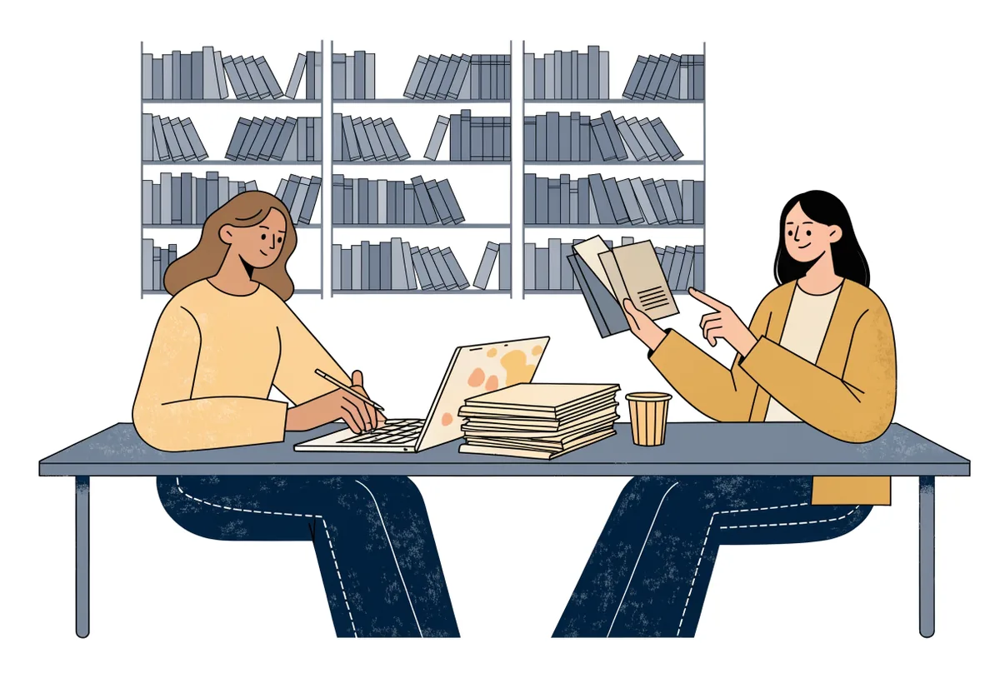
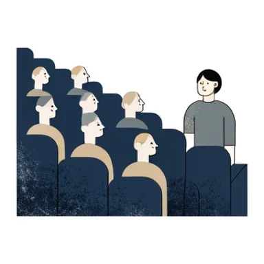
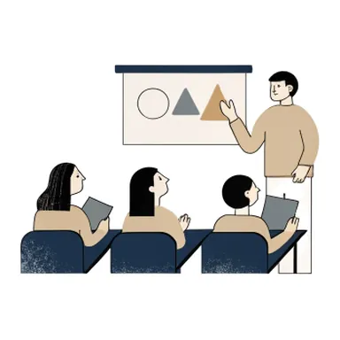
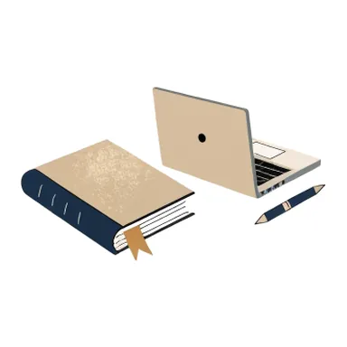
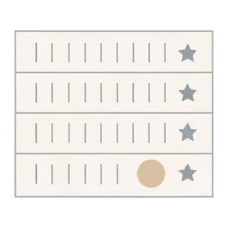
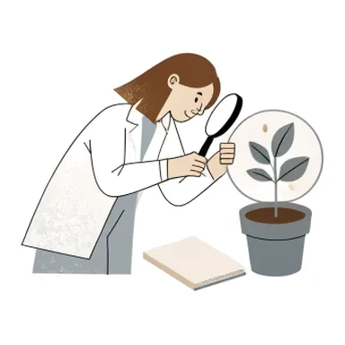
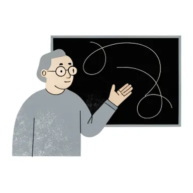
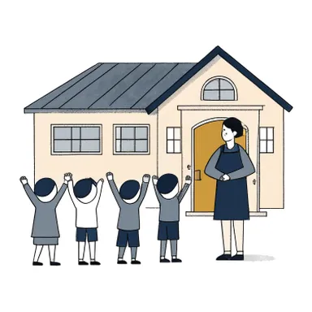
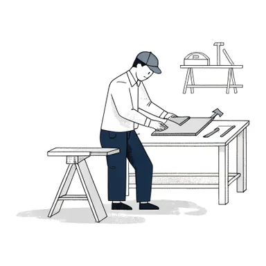
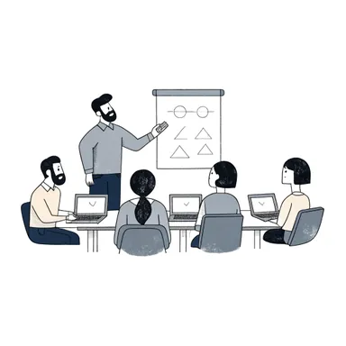

배우기 전에 먼저 해 보세요. 틀려도 괜찮아요.
weder A noch B는 무슨 뜻일까요?
weder … noch는 둘 다 아니라는 뜻이에요.
Du wirst sicher einen Platz bekommen.은 무엇을 말하나요?
werden과 Infinitiv로 앞으로의 일을 예상해요.
B1.2 Perspektiven · Lektion 2
대학과 평생 학습
음성은 준비 중이에요. 듣기 단추와 받아쓰기는 음성이 올라오면 쓸 수 있어요. 그동안은 글을 읽으면서 공부해요.

공부와 일은 한 번 배우고 끝나지 않아요. 다음에 무엇을 배울지 정하려면 과정들을 견주고, 계획과 예상을 말하고, 모르는 것을 물어볼 수 있어야 해요. 이 과에서는 앞으로의 일을 말하는 Futur I(werden과 Infinitiv)을 다시 보고, 둘을 묶는 sowohl … als auch, 하나를 고르는 entweder … oder, 둘 다 아니라고 하는 weder … noch를 배워요.
문법 Futur I, sowohl … als auch, entweder … oder, weder … noch
과제대학석사 과정 두 곳을 비교하고 문의 메일 쓰기
과제직장직무 교육 과정을 골라 상사에게 제안하기
이 과를 마치면 교육 과정을 비교하고, 계획과 예상을 말하고, 정보를 요청할 수 있어요.
이 과에서 쓸 말이에요.
배우기 전에 먼저 해 보세요. 틀려도 괜찮아요.
weder A noch B는 무슨 뜻일까요?
weder … noch는 둘 다 아니라는 뜻이에요.
Du wirst sicher einen Platz bekommen.은 무엇을 말하나요?
werden과 Infinitiv로 앞으로의 일을 예상해요.
Lektion 1의 낱말 다섯 개를 다시 떠올려 보세요.
2028년 5월, 대학 도서관이에요. Lena가 라이프치히의 석사 과정에 지원서를 쓰고 있어요. Jiu는 어제 좋은 소식을 들었어요.
들으면서 찾아보세요. Lena는 두 과정 모두 자리를 못 받으면 어떻게 하려고 하나요?
5월, Frau Hoffmann의 사무실이에요. Dohyun은 함부르크의 새 동료들을 도우면서 회의를 이끄는 일이 많아졌어요. 직무 교육을 받고 싶어서 찾아왔어요.
들으면서 찾아보세요. Frau Hoffmann은 왜 쾰른의 연수가 더 낫다고 하나요?
5월의 토요일 오후, 마인강 가의 카페예요. Sora와 Frau Becker는 한 달에 한 번쯤 만나요. 오늘은 앞으로의 계획을 이야기해요.
들으면서 찾아보세요. Sora는 독일 학교의 무엇이 어렵다고 하나요?
세 대화를 듣고 답하세요.
Lena는 어디에 지원하나요?
Die Zulassung kommt voraussichtlich im Mai.
8월에 나올 예정이에요.
Jiu는 겨울에 무엇을 시작하나요?
Dohyun은 왜 직무 교육을 받으려고 하나요?
Im Online-Kurs gibt es viele Übungen in der Gruppe.
여럿이 하는 연습도, 강사의 평가도 없어요.
연수 비용은 누가 내나요?
Sora는 9월에 무엇을 시작하나요?
Mit dem Abitur kann man nur an der Universität studieren.
대학에 갈 수도 있고 직업 교육을 받을 수도 있어요.
낱말 52개예요. 명사는 der, die, das를 색으로 구분했어요.
der Studiengang, die Studiengänge 학과 과정
Der Studiengang dauert vier Semester.그 과정은 네 학기예요.
der Bachelor 학사 과정
Im Sommer beende ich den Bachelor.여름에 학사 과정을 마쳐요.
der Master 석사 과정
Für den Master bewerbe ich mich in Leipzig.석사 과정은 라이프치히에 지원해요.
der Studienplatz, die Studienplätze 입학 자리
Sie hat einen Studienplatz bekommen.그 사람은 입학 자리를 받았어요.
die Zulassung, die Zulassungen 입학 허가
Die Zulassung kommt im August.입학 허가는 8월에 나와요.
sich einschreiben (hat sich eingeschrieben) 등록하다
Ich schreibe mich im September ein.9월에 등록해요.
das Wintersemester, die Wintersemester 겨울 학기
Das Wintersemester beginnt im Oktober.겨울 학기는 10월에 시작해요.

die Vorlesung, die Vorlesungen 강의
Die Vorlesung beginnt um zehn.강의는 10시에 시작해요.
das Seminar, die Seminare 세미나, 연수
Im Seminar diskutieren wir viel.세미나에서는 토론을 많이 해요.

das Referat, die Referate 발표
Nächste Woche halte ich ein Referat.다음 주에 발표를 해요.

die Abschlussarbeit, die Abschlussarbeiten 졸업 논문
Ich schreibe meine Abschlussarbeit in einer Firma.저는 졸업 논문을 회사에서 써요.

die Note, die Noten 성적, 점수
Sie hat sehr gute Noten.그 사람은 성적이 아주 좋아요.
das Fach, die Fächer 과목, 전공
Mein Fach ist Informatik.제 전공은 컴퓨터 공학이에요.
der Schwerpunkt, die Schwerpunkte 중점 분야
Mein Schwerpunkt ist Ökologie.제 중점 분야는 생태학이에요.

die Forschung 연구
Sie möchte in der Forschung arbeiten.그 사람은 연구 쪽에서 일하고 싶어 해요.

der Professor, die Professoren 교수
Der Professor liest meine Arbeit.교수님이 제 논문을 읽어요.
die Studienberatung 학업 상담소
Die Studienberatung hilft bei der Wahl des Fachs.학업 상담소가 전공을 고르는 일을 도와줘요.
die Regelstudienzeit 정해진 수업 연한
Die Regelstudienzeit ist vier Semester.정해진 수업 연한은 네 학기예요.
das Abitur 대학 입학 자격 시험
Nach dem Abitur hat sie studiert.그 사람은 Abitur를 본 뒤에 대학에 갔어요.
der Schulabschluss, die Schulabschlüsse 학교 졸업 자격
Welchen Schulabschluss haben Sie?어떤 학교 졸업 자격이 있으세요?
das Gymnasium, die Gymnasien 김나지움
Am Gymnasium macht man das Abitur.김나지움에서 Abitur를 봐요.

die Grundschule, die Grundschulen 초등학교
Hana geht in die Grundschule.Hana는 초등학교에 다녀요.
die Berufsausbildung, die Berufsausbildungen 직업 교육
Er macht eine Berufsausbildung als Koch.그 사람은 요리사 직업 교육을 받아요.
der Ausbildungsplatz, die Ausbildungsplätze 직업 교육 자리
Sie sucht einen Ausbildungsplatz.그 사람은 직업 교육 자리를 찾아요.

das Handwerk 기술직, 수공업
Im Handwerk fehlen viele Leute.기술직에는 사람이 많이 모자라요.
der Meister, die Meister 마이스터
Nach fünf Jahren wurde er Meister.그 사람은 5년 뒤에 마이스터가 됐어요.
die Fortbildung, die Fortbildungen 직무 교육
Im Juni mache ich eine Fortbildung.6월에 직무 교육을 받아요.

die Schulung, die Schulungen 교육, 연수
Die Schulung dauert zwei Tage.교육은 이틀 동안 해요.
sich weiterbilden (hat sich weitergebildet) 계속 배우다
Ich möchte mich weiterbilden.저는 계속 배우고 싶어요.
die Umschulung, die Umschulungen 다른 직업을 위한 재교육
Nach der Umschulung arbeitet sie als Pflegerin.재교육을 받은 뒤에 그 사람은 간병인으로 일해요.
die Kompetenz, die Kompetenzen 역량
Im Seminar lernt man neue Kompetenzen.연수에서 새 역량을 길러요.
das Wissen 지식
Sie hat viel Wissen über Pflanzen.그 사람은 식물을 많이 알아요.
anerkennen (hat anerkannt) 인정하다
Mein Abschluss wurde anerkannt.제 학위가 인정됐어요.
der Nachweis, die Nachweise 증명, 증명 서류
Ich brauche einen Nachweis über meine Sprachkenntnisse.언어 실력을 증명하는 서류가 필요해요.
die Teilnahme 참가
Die Teilnahme ist kostenlos.참가비는 없어요.
fördern (hat gefördert) 지원하다, 북돋우다
Die Firma fördert Fortbildungen.회사가 직무 교육을 지원해요.
sich lohnen (hat sich gelohnt) 그만한 값어치가 있다
Das Seminar lohnt sich.그 연수는 들을 만해요.
sowohl … als auch ~도 ~도
Ich lerne sowohl Deutsch als auch Englisch.저는 독일어도 영어도 배워요.
entweder … oder ~이거나 ~이거나
Wir fahren entweder heute oder morgen.우리는 오늘이나 내일 가요.
weder … noch ~도 ~도 아니다
Ich habe weder Zeit noch Geld.저는 시간도 돈도 없어요.
wahrscheinlich 아마
Wahrscheinlich bleibe ich in Frankfurt.아마 프랑크푸르트에 남을 거예요.
voraussichtlich 예정대로라면
Der Kurs beginnt voraussichtlich im Mai.과정은 예정대로라면 5월에 시작해요.
eventuell 어쩌면
Eventuell mache ich später noch den Master.어쩌면 나중에 석사 과정도 할 거예요.
demnächst 곧
Demnächst beginnt das neue Semester.곧 새 학기가 시작돼요.
künftig 앞으로는
Künftig arbeite ich fünfzehn Stunden pro Woche.앞으로는 일주일에 열다섯 시간을 일해요.
eines Tages 언젠가
Eines Tages möchte ich eine eigene Firma haben.언젠가 제 회사를 갖고 싶어요.
irgendwann 언젠가는
Irgendwann will ich in Korea unterrichten.언젠가는 한국에서 가르치고 싶어요.
rechnen mit (hat gerechnet) ~을 예상하다
Ich rechne mit einer Zusage.저는 합격을 예상해요.
die Möglichkeit, die Möglichkeiten 가능성, 방법
Es gibt zwei Möglichkeiten.두 가지 방법이 있어요.
die Dauer 기간
Die Dauer des Kurses ist sechs Wochen.과정 기간은 여섯 주예요.
der Beginn 시작
Der Beginn ist am ersten Oktober.시작은 10월 1일이에요.
der Vergleich, die Vergleiche 비교
Im Vergleich zu Freiburg ist Leipzig günstiger.프라이부르크와 견주면 라이프치히가 더 싸요.
이 과의 낱말로 여덟 문제를 풀어요.
werden은 둘째 자리에, Infinitiv는 문장 끝에 와요.
둘 다인지, 하나인지, 둘 다 아닌지를 가려요.
규칙
A2.2에서 werden과 Infinitiv로 앞일을 말하는 법을 배웠어요. 이 모양을 Futur I이라고 해요. werden은 주어에 맞춰 둘째 자리에 오고, Infinitiv는 문장 끝에 와요. 계획을 말할 때도 쓰지만, 앞으로 어떻게 될지 예상하거나 다짐할 때 특히 많이 써요. sicher, wahrscheinlich, voraussichtlich 같은 말과 잘 어울려요.
| ich | werde | … anfangen |
|---|---|---|
| du | wirst | … anfangen |
| er, sie, es | wird | … anfangen |
| wir | werden | … anfangen |
| ihr | werdet | … anfangen |
| sie, Sie | werden | … anfangen |
주의 언제인지 알려 주는 말이 있으면 Präsens로도 앞일을 말해요. Im Oktober beginnen die Vorlesungen. 두 문장 모두 맞아요. dass 문장에서는 werden이 맨 끝으로 가요. Er hat gesagt, dass er meine Kunden übernehmen wird.
규칙을 보고 바로 확인해 보세요.
Hana … ihren Weg finden. 빈칸에 알맞은 말은 무엇인가요?
규칙
두 가지가 모두 맞을 때 sowohl … als auch를 써요. und보다 '둘 다'라는 뜻이 더 뚜렷해요. sowohl과 als auch 뒤에는 같은 종류의 말이 와요. 명사와 명사, 전치사구와 전치사구, 동사와 동사를 묶어요. 쉼표는 찍지 않아요.
| 묶는 것 | 보기 |
|---|---|
| 명사 | sowohl Deutsch als auch Englisch |
| 전치사구 | sowohl für Biologie als auch für Biochemie |
| 동사 | sowohl studieren als auch arbeiten |
주의 같은 뜻으로 nicht nur … sondern auch도 있어요. 이 말은 4과에서 배워요. 주어를 sowohl … als auch로 묶으면 동사는 복수로 써요. Sowohl Lena als auch Jiu wohnen in Bockenheim.
규칙을 보고 바로 확인해 보세요.
Sie spricht sowohl Englisch … Dänisch. 빈칸에 알맞은 말은 무엇인가요?
규칙
둘 가운데 하나만 될 때 entweder … oder를 써요. 낱말과 낱말을 이을 수도 있고 문장과 문장을 이을 수도 있어요. 문장을 이을 때 entweder가 맨 앞에 오면 바로 뒤에 동사가 와요. oder 뒤는 보통 문장의 순서 그대로예요. 두 문장 사이에는 쉼표를 찍을 수 있어요.
| 첫 문장 | 둘째 문장 |
|---|---|
| Entweder bekomme ich einen Platz, | oder ich arbeite im Labor. |
| Entweder kommst du heute, | oder wir treffen uns morgen. |
주의 entweder를 주어 뒤에 둘 수도 있어요. Ich bekomme entweder einen Platz, oder ich arbeite im Labor. 뜻은 같아요.
규칙을 보고 바로 확인해 보세요.
Entweder … ich in Frankfurt, oder ich ziehe um. 빈칸에 알맞은 말은 무엇인가요?
규칙
두 가지가 모두 아닐 때 weder … noch를 써요. 이 말에 이미 '아니다'라는 뜻이 들어 있어요. 그래서 nicht나 kein을 또 쓰지 않아요. Ich habe weder kein Geld라고 하면 틀려요. weder와 noch 뒤에도 같은 종류의 말이 와요.
| 틀려요 | 맞아요 |
|---|---|
| Ich habe weder keine Zeit noch kein Geld. | Ich habe weder Zeit noch Geld. |
| Er kann weder nicht kochen noch nicht backen. | Er kann weder kochen noch backen. |
주의 세 가지를 한눈에 보면 이래요. sowohl A als auch B는 둘 다, entweder A oder B는 둘 중 하나, weder A noch B는 둘 다 아님이에요.
규칙을 보고 바로 확인해 보세요.
Ich habe weder Zeit … Lust. 빈칸에 알맞은 말은 무엇인가요?
듣고 알맞은 것을 고르세요.
Lena는 몇 과정에 지원하나요?
Ich bewerbe mich sowohl für Biologie als auch für Biochemie.
온라인 과정에는 무엇이 있나요?
Dort gibt es weder Übungen in der Gruppe noch eine Rückmeldung vom Trainer.
Sora는 언제 수업을 들으려고 하나요?
Im September werde ich mit dem B2-Kurs anfangen, entweder am Abend oder am Samstag.
Jiu는 무엇을 말하나요?
Mit deinen Noten wirst du sicher einen Platz bekommen.
Lena가 라이프치히 대학의 학업 상담소에 전화해요. 듣고 답하세요.
Ein Anruf bei der Studienberatung
Lena Guten Tag, ich habe eine Frage zum Master Biologie. Kann ich mich auch für zwei Studiengänge bewerben?
Studienberatung Ja, das geht. Sie können sich sowohl für Biologie als auch für Biochemie bewerben. Sie brauchen aber zwei Anträge.
Lena Und welche Nachweise brauche ich?
Studienberatung Ihr Bachelorzeugnis und einen Nachweis über Ihre Englischkenntnisse. Wenn Sie das Zeugnis noch nicht haben, reicht zunächst eine Liste Ihrer Noten.
Lena Wann werde ich eine Antwort bekommen?
Studienberatung Voraussichtlich Anfang August. Danach müssen Sie sich bis zum fünfzehnten September einschreiben.
Wie viele Anträge braucht Lena für zwei Studiengänge?
Lena braucht einen Nachweis über ihre Englischkenntnisse.
Was reicht, wenn das Zeugnis noch fehlt?
Wann kommt die Antwort voraussichtlich?
Lena muss sich bis zum 15. September einschreiben.
Dohyun이 찾은 두 가지 직무 교육이에요. 읽고 답하세요.
Zwei Angebote im Vergleich
| Seminar | Online-Kurs | |
|---|---|---|
| Titel | Führung und Kommunikation | Projektleitung |
| Ort | Köln | zu Hause |
| Dauer | 3 Tage (14.–16. Juni) | 6 Wochen, dienstags und donnerstags abends |
| Kosten | 1.400 Euro | 600 Euro |
| Inhalte | Besprechungen leiten, Gespräche mit Kunden üben | Theorie, Videos, Tests |
| Rückmeldung | vom Trainer und von der Gruppe | keine |
| Abschluss | Nachweis über die Teilnahme | Zertifikat nach einem Test |
Wo findet das Seminar statt?
Wie lange dauert der Online-Kurs?
Der Online-Kurs ist teurer als das Seminar.
온라인 과정은 600유로, 연수는 1,400유로예요.
Wo bekommt man eine Rückmeldung vom Trainer?
Für das Zertifikat im Online-Kurs muss man einen Test machen.
werden을 알맞은 모양으로 쓰세요.
Im Oktober ich in Leipzig wohnen. (werden)
10월에 저는 라이프치히에 살 거예요.
Du sicher einen Platz bekommen. (werden)
틀림없이 자리를 받을 거예요.
Die Firma die Kosten übernehmen. (werden)
회사가 비용을 낼 거예요.
Wir beide etwas Neues anfangen. (werden)
우리 둘 다 새 일을 시작할 거예요.
Wann ihr umziehen? (werden)
여러분은 언제 이사할 거예요?
Die Vorlesungen im Oktober beginnen. (werden)
강의는 10월에 시작될 거예요.
뜻을 보고 알맞은 말을 고르세요.
Ich lerne Deutsch als auch Englisch.
저는 독일어도 영어도 배워요.
Wir treffen uns entweder heute morgen.
우리는 오늘이나 내일 만나요.
Er hat weder angerufen geschrieben.
그 사람은 전화도 안 했고 글도 안 썼어요.
Die Fortbildung ist interessant als auch nützlich.
그 직무 교육은 재미도 있고 쓸모도 있어요.
nehme ich den Zug, oder ich fahre mit dem Auto.
기차를 타거나, 아니면 차로 가요.
Ich habe Zeit noch Lust.
저는 시간도 없고 마음도 없어요.
문장 끝에 올 말을 고르세요.
Im Winter werde ich mit der Masterarbeit .
겨울에 석사 논문을 시작할 거예요.
werden 뒤에는 Infinitiv가 문장 끝에 와요.
Hana wird ihren Weg .
Hana는 자기 길을 찾을 거예요.
Er hat gesagt, dass er meine Kunden übernehmen .
그 사람이 제 고객을 맡겠다고 했어요.
dass 문장에서는 werden이 맨 끝으로 가요.
Wahrscheinlich wir im Herbst umziehen.
아마 우리는 가을에 이사할 거예요.
Wirst du im Café ?
카페는 그만둘 거예요?
낱말을 순서대로 눌러 문장을 만드세요.
10월에 강의가 시작될 거예요.
저는 시간도 돈도 없어요.
여기 남거나, 아니면 이사해요.
그 사람은 영어도 덴마크어도 해요.
회사가 비용을 낼 거예요.
낱말과 설명을 짝지으세요.
빈칸에 알맞은 낱말을 쓰세요.
Im Oktober beginnen die .
10월에 강의가 시작돼요.
Sie hat einen in Leipzig bekommen.
그 사람은 라이프치히에서 입학 자리를 받았어요.
Mein Abschluss aus Korea wurde .
한국에서 받은 제 학위가 인정됐어요.
Das Seminar sich.
그 연수는 들을 만해요.
듣고 그대로 써 보세요.
음성 준비 중Im Oktober werden die Vorlesungen beginnen. 10월에 강의가 시작될 거예요.
음성 준비 중Ich habe weder Zeit noch Geld. 저는 시간도 돈도 없어요.
음성 준비 중Die Firma wird die Kosten übernehmen. 회사가 비용을 낼 거예요.
Im Vergleich zum Online-Kurs ist das Seminar teurer. 온라인 과정과 견주면 연수가 더 비싸요.
Beide Studiengänge dauern vier Semester. 두 과정 모두 네 학기예요.
Der eine ist auf Deutsch, der andere auf Englisch. 한쪽은 독일어로, 다른 쪽은 영어로 해요.
Das Seminar lohnt sich mehr. 연수가 더 값어치가 있어요.
Im Herbst werde ich mit dem Master anfangen. 가을에 석사 과정을 시작할 거예요.
Ich habe vor, mich weiterzubilden. 저는 계속 배울 생각이에요.
Entweder studiere ich weiter, oder ich suche eine Stelle. 공부를 이어 가거나, 아니면 일자리를 찾을 거예요.
Eines Tages möchte ich eine eigene Firma haben. 언젠가 제 회사를 갖고 싶어요.
Wahrscheinlich werde ich einen Platz bekommen. 아마 자리를 받을 거예요.
Ich rechne mit einer Antwort im August. 8월에 답이 올 것으로 예상해요.
Das wird sicher nicht einfach. 그건 틀림없이 쉽지 않을 거예요.
Voraussichtlich dauert es zwei Jahre. 예정대로라면 2년이 걸려요.
Ich interessiere mich für den Master Informatik. 저는 컴퓨터 공학 석사 과정에 관심이 있어요.
Welche Voraussetzungen gibt es? 어떤 조건이 있나요?
Bis wann muss ich mich bewerben? 언제까지 지원해야 하나요?
Könnten Sie mir bitte Informationen schicken? 자료를 보내 주실 수 있을까요?
Ich würde gern eine Fortbildung machen. 직무 교육을 받고 싶습니다.
Die Schulung wäre sowohl für mich als auch für das Team nützlich. 그 교육은 저에게도 팀에도 쓸모가 있을 겁니다.
Wäre es möglich, dass die Firma die Kosten übernimmt? 회사가 비용을 내 줄 수 있을까요?
Danach werde ich dem Team berichten. 끝나면 팀에 알리겠습니다.
과제 고르기
역할 대화와 말하기, 쓰기 과제는 대학 생활과 직장 생활 두 가지예요. 하나를 고르면 다음 과에서도 그쪽 과제가 나와요. 언제든 바꿀 수 있어요.
대화 A에서 역할을 하나 고르세요. 상대의 말은 글로 읽고, 내 차례에는 직접 말해요.
대화 B에서 역할을 하나 고르세요. 상대의 말은 글로 읽고, 내 차례에는 직접 말해요.
내 계획으로 칸을 채우세요. 완성된 문장을 소리 내어 읽어 보세요.
Demnächst werde ich mit dem B2-Kurs anfangen.
Entweder bleibe ich in Frankfurt, oder ich ziehe nach Berlin.
Eines Tages möchte ich eine eigene Firma haben.
나는 내년에 석사 과정을 시작하려고 해요. 두 곳을 찾았어요. 다름슈타트의 Informatik 과정은 독일어로 하고, 겨울 학기와 여름 학기에 시작할 수 있어요. 만하임의 Data Science 과정은 영어로 하고, 겨울 학기에만 시작해요. 둘 다 네 학기예요.
나는 독일에서 일하고 싶어서 독일어로 하는 과정에 마음이 가요. 하지만 어떤 독일어 증명이 필요한지, 지원 마감이 언제인지 몰라요. 학업 상담소에 물어보려고 해요.
Lena가 물어요. 쪽지를 보고 답하세요. 질문을 듣고 소리 내어 답한 뒤 예시 답과 비교해 보세요.
Du suchst einen Master? Welche Studiengänge hast du gefunden? 석사 과정을 찾고 있어요? 어떤 과정을 찾았어요?
Zwei. Entweder Informatik in Darmstadt oder Data Science in Mannheim.
Was ist der Unterschied? 뭐가 달라요?
Der eine ist auf Deutsch, der andere auf Englisch. Beide dauern vier Semester.
Und wann kann man anfangen? 언제 시작할 수 있어요?
In Darmstadt sowohl im Winter als auch im Sommer. In Mannheim nur im Wintersemester.
Wofür wirst du dich entscheiden? 어느 쪽으로 정할 거예요?
Wahrscheinlich für Darmstadt. Ich möchte später in Deutschland arbeiten.
Weißt du schon alles über die Bewerbung? 지원하는 법은 벌써 다 알아요?
Nein. Ich kenne weder die Frist noch die Voraussetzungen. Ich werde der Studienberatung schreiben.
Eine Anfrage an die Studienberatung
관심 있는 석사 과정에 대해 학업 상담소에 묻는 메일을 써 보세요. 일곱 문장쯤 써요.
Sehr geehrte Damen und Herren, ich komme aus Korea und beende im Sommer meinen Bachelor in Informatik. Ich interessiere mich für Ihren Master Informatik und werde mich voraussichtlich für das Wintersemester bewerben. Dazu habe ich drei Fragen. Welche Voraussetzungen gibt es für Bewerber aus dem Ausland? Brauche ich sowohl einen Nachweis über Deutschkenntnisse als auch über Englischkenntnisse? Und bis wann muss ich mich bewerben? Könnten Sie mir bitte auch Informationen über die Kosten schicken? Vielen Dank für Ihre Hilfe. Mit freundlichen Grüßen, Minji Choi
다 쓴 뒤에 확인해 보세요.
나는 엔지니어이고, 몇 달 전부터 새 직원 두 사람에게 일을 가르쳐요. 그런데 설명하고 평가하는 일이 어려워요. 그래서 직무 교육을 받고 싶어요.
두 가지를 찾았어요. 9월에 프랑크푸르트에서 이틀 동안 하는 교육 「Mitarbeiter einarbeiten」(800유로)과 넉 주 동안 하는 온라인 과정(300유로)이에요. 이틀짜리 교육에서는 설명하는 법도 연습하고 평가하는 법도 연습해요. 온라인 과정에는 연습이 없어요. 나는 이틀짜리 교육을 받고 싶어요.
팀장이 물어요. 쪽지를 보고 답하세요. 질문을 듣고 소리 내어 답한 뒤 예시 답과 비교해 보세요.
Sie wollten mit mir über eine Fortbildung sprechen? 직무 교육 이야기를 하고 싶다고 하셨죠?
Ja. Seit einigen Monaten arbeite ich zwei neue Kollegen ein. Dafür würde ich gern eine Schulung machen.
Welche Angebote haben Sie gefunden? 어떤 과정을 찾으셨어요?
Zwei. Entweder eine Schulung in Frankfurt, zwei Tage im September, oder einen Online-Kurs, vier Wochen lang.
Und was ist der Unterschied? 뭐가 다른가요?
In der Schulung übt man sowohl das Erklären als auch die Rückmeldung. Im Online-Kurs gibt es weder Übungen noch einen Trainer.
Was kostet das? 비용은요?
Die Schulung kostet achthundert Euro, der Online-Kurs dreihundert. Aber die Schulung lohnt sich mehr.
Gut, die Kosten übernehmen wir. Was bekommen wir dafür? 좋아요, 비용은 우리가 낼게요. 우리는 무엇을 얻나요?
Vielen Dank. Nach der Schulung werde ich dem Team berichten, was ich gelernt habe.
Ein Vorschlag für eine Fortbildung
받고 싶은 직무 교육을 팀장에게 제안하는 메일을 써 보세요. 일곱 문장쯤 써요.
Sehr geehrte Frau Hoffmann, seit einigen Monaten arbeite ich zwei neue Kollegen ein und würde dafür gern eine Fortbildung machen. Ich habe zwei Angebote gefunden: entweder eine Schulung in Frankfurt, zwei Tage im September, oder einen Online-Kurs, vier Wochen lang. In der Schulung übt man sowohl das Erklären als auch die Rückmeldung. Im Online-Kurs gibt es weder Übungen noch einen Trainer. Deshalb würde ich gern die Schulung besuchen. Sie kostet 800 Euro. Wäre es möglich, dass die Firma die Kosten übernimmt? Nach der Schulung werde ich dem Team berichten, was ich gelernt habe. Mit freundlichen Grüßen, Minji Choi
다 쓴 뒤에 확인해 보세요.
Ich kann zwei Kurse oder Studiengänge vergleichen.과정 두 곳을 비교할 수 있어요.
Ich kann sagen, was ich vorhabe und was wahrscheinlich passieren wird.무엇을 하려고 하는지, 앞으로 어떻게 될 것 같은지 말할 수 있어요.
Ich kann schriftlich um Informationen bitten.글로 정보를 요청할 수 있어요.
Ich kann zwei Dinge mit sowohl … als auch, entweder … oder und weder … noch verbinden.두 가지를 sowohl … als auch, entweder … oder, weder … noch로 이을 수 있어요.